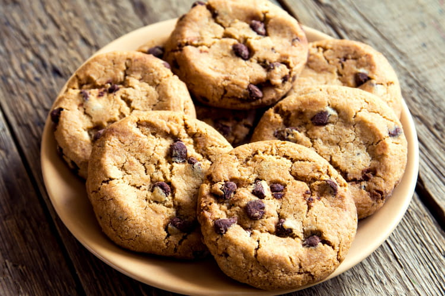

Recette de cookies
Recette pour 6 personnes !

Ingrédients:
- 1 Oeuf
- 85g de sucre
- 85g de beurre
- 150g de farine
- 100g de pépites de chocolat
- 1 sachet de sucre vanillé
- 1 cuillère à café de levure chimique
- 1/2 cuillère à café de sel
Préparation:
- Laissez ramollir le beurre à température ambiante. dans un saladier, malaxez-le avec le sucre.
- ajoutez l'oeuf et eventuellement le sucre vanillé.
- Versez progressivement la farine, la levure chimique, le sel et les pépites de chocolat. mélangez bien.
- beurrez une plaque allant au faour ou recouvrez-la d'une plaque de silicone. A l'aide de deux cuillères à soupe ou simplement avec les mains, fourrez des noix de pâte en les espaçant car elles s'étaleront à la cuisson.
- Faites cuire 8 à 10 min à 180°C soit thermostat 6. Il faut les sortir dès que les contours commencent à brunir.